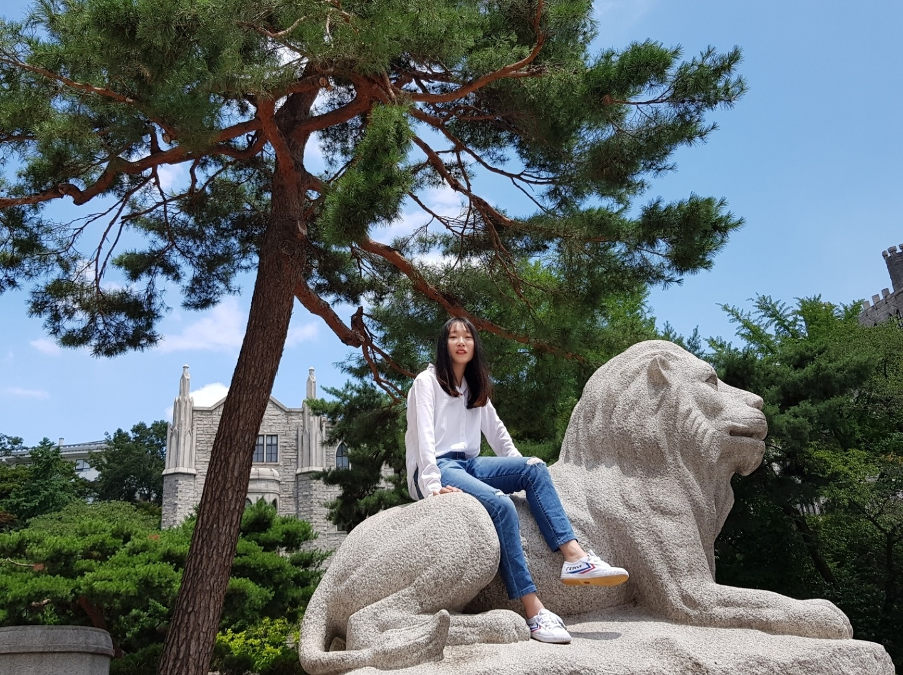
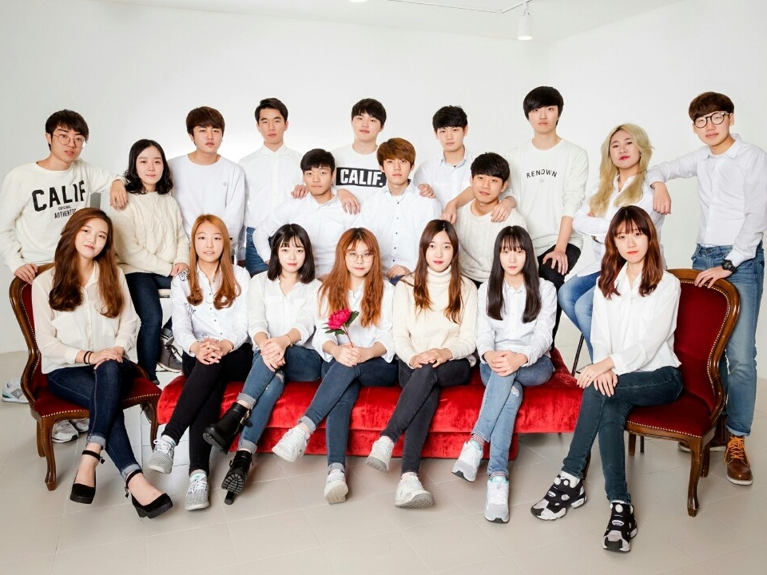

- Intro
- Childhood
- Univ Life
Univ Life
My university is KyungHee University located in Hoegi. It is famous as beautiful buildings. My major is Business Administration. For four years, I have learned a lot. Memories are everywhere in campus.

The symbol of my university is a lion. In front of the main building in campus, students drink and play during Spring, especially when the cherry blossom is everywhere. I still remember the moment that I drank and did some drinking game with my friends and seniors. Sometimes I miss that time a lot.

I did kind of academic club activity. My club's name is M1492. We had the seminar every Thursdays and after that, we usually went to the pub. I have met many good friends there. Even though there were some bad memories, I will keep it as my youth. Anyways it was more than half of my university life.